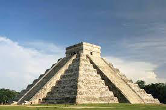

chichen itza

Chichén Itzá (del maya yucateco: Chi? Ch?e?en Its Ja? ‘Boca del pozo de los brujos del agua’)1? es uno de los principales sitios arqueológicos mayas de la península de Yucatán, en México. Se encuentra a escasos 2.5 km de la localidad de Pisté, en el municipio de Tinum, en el estado de Yucatán, al sureste del país.